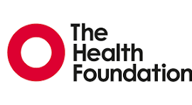

Research
Research Interests
My research draws on applied microeconomics and behavioural economics, with applications in public health, food choices, and consumer behaviour. I focus on understanding how individuals form preferences, perceive risk, and make decisions across consumption, health, financial, and policy contexts — and on applying and advancing the stated preference methods needed to measure these processes rigorously (including work on preference heterogeneity, attribute non-attendance, decision heuristics, position bias, and experimental design).
A thread running through this work is methodological. I apply and advance discrete choice experiments, best-worst scaling, and survey design to uncover values and priorities that cannot easily be observed directly — with as much attention to whether the tools are asking the right questions as to the answers they produce.
Research Areas
Consumer choice and food — How do labelling, framing, and information provision shape food purchasing decisions? I examine how consumers respond to nutritional labels, packaging claims, and new food technologies — and what this reveals about the gap between stated preferences and actual behaviour.
Health economics and patient preferences — What do patients and the public genuinely value in health services and self-management? How should those preferences inform policy, investment, and clinical decision-making?
Nudging, information, and behaviour change — How does the framing and presentation of information influence decisions? I examine nudge interventions, labelling strategies, and communication tools — asking when information changes behaviour and when it does not.
Risk perception and understanding — How do individuals perceive, characterise, and make sense of risk? I examine how people understand risks across food, health, and clinical contexts — including food safety risk, maternity care decision-making, and the factors that shape whether risk information is trusted, processed, or acted upon.
Financial decision-making — How do individuals form time preferences, make credit and repayment decisions, and navigate financial risk? What does behavioural economics reveal about financial choices that standard models miss?
Stated preference methods — How can discrete choice experiments and best-worst scaling be designed, estimated, and interpreted more reliably, drawing on tools from behavioural science? How do we account for heterogeneity, heuristics, and bias in stated preference data?
Research Funding
Community-Driven Nature-Based Solutions for Environmental Sustainability in Malaysian Aquaculture
Working with aquaculture communities in Malaysia to co-develop nature-based solutions that improve environmental sustainability in fish farming systems, integrating community knowledge with scientific approaches to deliver locally relevant outcomes.
Steering Innovation to Sustain Tilapia Production in Thailand
Examining consumer and producer perspectives on tilapia production systems in Thailand, generating evidence to guide sustainable innovation and inform market development strategies for the sector.
Engaging with One Health: Translating Perception around Aquatic and Terrestrial Animal Consumption in Vietnam and China
Exploring how consumers in Vietnam and China perceive and value aquatic and terrestrial animal products through a One Health lens, bridging natural and social science approaches to understand consumption behaviour and sustainability trade-offs.
The Wearable Clinic: Connecting Health, Self and Care
Investigating patient and public preferences for wearable health technologies in the context of chronic disease self-management, examining how digital tools can better connect individuals with their care.

Patient Preferences for Self-Management Strategies Using Discrete Choice Experiment
Using discrete choice experiments to elicit patient preferences for self-management strategies in chronic disease, providing evidence to support the design of patient-centred support programmes and inform health service policy.